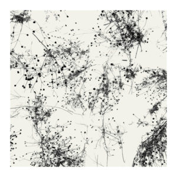

29
Dec
2017
Top 20 of 2017: David Smith
By David Smith. Posted in Ambient, Analysis and Opinion, Blues, Classical, Drone, Electronic, Experimental, Folk, Jazz, Pop, Rock, World | No Comments »Can it be a year since the last list? Here goes with my favorite 20 releases of 2017. Your tastes are not mine, you will disagree, but maybe there is something here that you might not have discovered, something of beauty that might bring you joy. At one point I thought this might be a thin year; when I got down to making the list I realized there was no filler at the bottom. Exact placement is fuzzy – there are lots of apples and oranges being compared here. Feel free to move any of these up or down a few places in your head.
#1. Taylor Deupree – Somi
Deupree’s Faint from a few years ago is still one of my regular listens and pleasures, and I wonder with hindsight if I should have placed it at number one that year. He gave me another chance with the magnificent, meditative Somi. Loops of single notes from acoustic instruments played at varying intervals are layered and treated to create a fascinating slow dance of beauty and rest. And the deluxe edition packaging was as gorgeous as the music. (Listen)

#2. Daniel Herskedal – The Roc
Norwegian tubaist Herskedal’s new album adds an Arabic influence to his tuba-based jazz-folk explorations. The result is a unique, at times magical set of tunes high in atmosphere and richly colored. Several parts of this album stayed in my head all year. (Listen)

#3. Pausal – Avifaunal
Pausal’s warm and finely textured drones have been growing on me the last few years. This year’s release took things up a notch, with a sweeping grandeur and narrative flow that make each minute count. An album to get lost in. (Listen)
#4. Anat Cohen Tentet – Happy Song
The title and bright yellow cover are apt. New York-based Israeli clarinetist Cohen and her ensemble deliver a vibrantly grooving set of jazz romps that shift in character as the album progresses while maintaining an infectious sense of joy. (Listen)
#5. Tinariwen – Elwan
The Saharan blues return with the latest from the great Tuareg band, and it’s one of their finest. The sinuous, swaying rhythms undergird starkly poetic laments at the loss of social and environmental fabric. (Watch) (Buy)
#6. Seldom Sene Recorder Consort – Goldberg Variations
As the title gives away, this is the Goldberg Variations played on recorders by a Dutch recorder consort. In addition to the virtuoso playing, the different sonorities of the wind instruments made the Goldbergs sparkle for me in a gentle and delightful new way. (Listen) (Listen)
#7. Otto A. Totland – The Lost
Very similar in spirit to its predecessor, Pinô, this second album of piano solos again showcases Norwegian pianist Otto Totland’s ability to conjure a gentle, plaintive warmth through small melodies and soft sounds. (Listen)

#8. Chihei Hatakeyama & Federico Durand – Sora
Combining Hatakeyama’s characteristic gossamer tonal washes and Durand’s delightfully pattering small sounds is a recipe for enormous prettiness, and that is just what we get on this deeply calming album. (Listen)

#9. The Green Kingdom – The North Wind and the Sun
The Green Kingdom has issued a long series of recordings offering an attractive world of delicate small sounds and textures. This release feels like something fresh as it bursts forth into uplifting melody thanks to the foregrounded guitar work. (Listen/Watch)
#10. Emile Parisien, Vincent Peirani, Andreas Schaerer & Michael Wollny – Out of Land
An unusual but top-notch European jazz combo consisting of sax, accordion, piano, and vocalizations/beatboxing. The live recordings prickle with energy and abound in creativity, making for an exciting listen. (Watch)

#11. Fieldhead – We’ve All Been Swimming
Fieldhead’s latest is by far my favorite by the artist so far. It plays with odd rhythmic combinations, layering looping synth melodies over divergent rhythms. The result is a kind of mellow fascination, and great fun. (Listen)
#12. Orchestral Manoeuvres in the Dark – The Punishment of Luxury
Not much pop makes my lists, but I loved OMD as a teen, and this new release sounds as if it could have been the immediate follow up to 1983’s Dazzle Ships. It nails what made their original Kraftwerk-with-soul sound special, and that made me grin. (Listen)
#13. Rudresh Mahanthappa/Indo-Pak Coalition – Agrima
The celebrated Indian-American saxophonist and chair of the Princeton jazz department joins sax, electric guitar and tabla in a stirring trio session filled with driving rhythms and sparkling motifs. (Watch) (Buy for $2.50!)
#14. Helge Lien Trio – Guzuguzu
With track titles drawn from Japanese onomatopoeia, Helge Lien’s latest piano trio album is made up of moody evocations of atmosphere and movement, often skirting around song structures. Sparkling piano breaks through like rays of sunlight. (Watch)

#15. Porya Hatami – Monads
When I posted my review of this to Facebook none of my friends hit “like,” and it is admittedly a pretty abstract set of experiments with sound rather than a collection of tunes. But they are fascinating experiments, glimpses into the push-and-pull of forces that make the world a place with sound. (Listen) (Full Review)

#16. Yazz Ahmed – La Saboteuse
Ahmed is a British-Bahraini trumpeter who here successfully melds Arabic motifs, electronic treatments, and jazz trumpet in a set of beguiling tunes. (Listen)
#17. Alea Saxophone Quartet – Arvo Pärt: Anima
If the idea of Pärt played on saxophones conjures up a mental collision of ethereal voices and ill-chosen skronking, think again. The pure tones and harmonies of the sax quartet evocatively capture the spirit of Pärt’s austere choral pieces. (Listen)
#18. Taylor Deupree & Marcus Fischer – Lowlands
Building on previous outings as a duo, Deupree and Fischer again show a mastery of the microscopic world of small resonances, adding another delightful release to their growing oeuvre. (Listen)
#19. Brot & Sterne – Tales of Herbst
This was not quite like anything else I listened to, which is perhaps not surprising in the case of a hurdy-gurdy/hang drum/trumpet jazz trio. The improvised instrumentals set warmly tuneful passages amid unique and atmospheric textures. (Listen)

#20. Billow Observatory – II: Plains/Patterns
More active than their debut release, this collection of ambient pieces pulses and shimmers airily. Enjoyable throughout. (Listen)
The next 10…
And here are ten more that I had a really hard time cutting to get the list down to 20. Some of these jumped in and out of my list several times, and might have made it if I had finalized the list tomorrow. Alphabetically:
Wil Bolton – Night Paths (Ambient)
Bruce Cockburn – Bone on Bone (Folk)
Marcus Fischer – Loss (Ambient)
From the Mouth of the Sun – Hymn Binding (Modern Classical)
Ian Hawgood & Wil Bolton – Transparencies (Ambient)
Hudson – Hudson (Jazz)
Rafael Anton Irisarri – The Shameless Years (Ambient)
Benedikt Jahnel Trio – The Invariant (Piano jazz)
Darren McClure – Nature Mirror (Ambient)
Phronesis, Julian Argüelles, & Frankfurt Radio Big Band – The Behemoth (Jazz)
As ever, if any of the artists happen by, thank you for another year of inspiring music.
David Smith
David Smith currently lives in the Midwestern United States, where he teaches, writes, and enjoys a very wide range of music, with regard to which he claims no expertise whatsoever beyond that of a dedicated and appreciative listener.
All posts by David Smith | Subscribe to Entries (RSS)